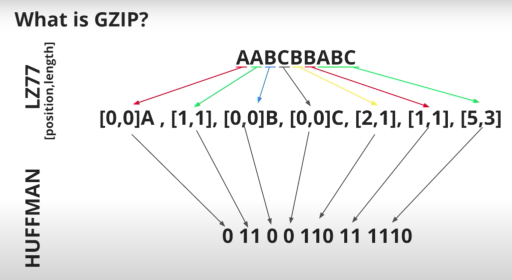
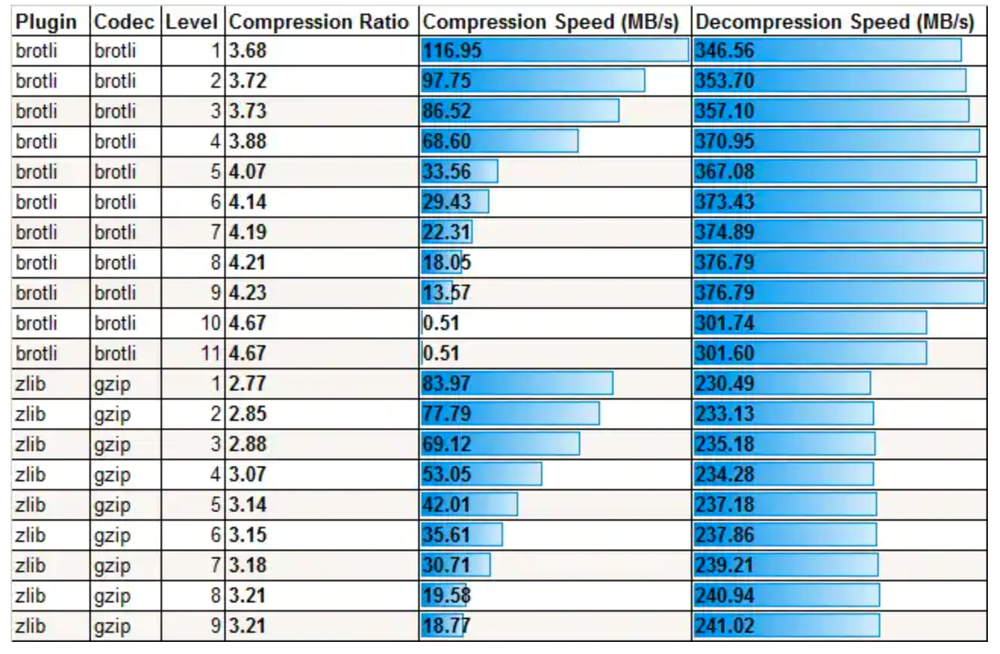
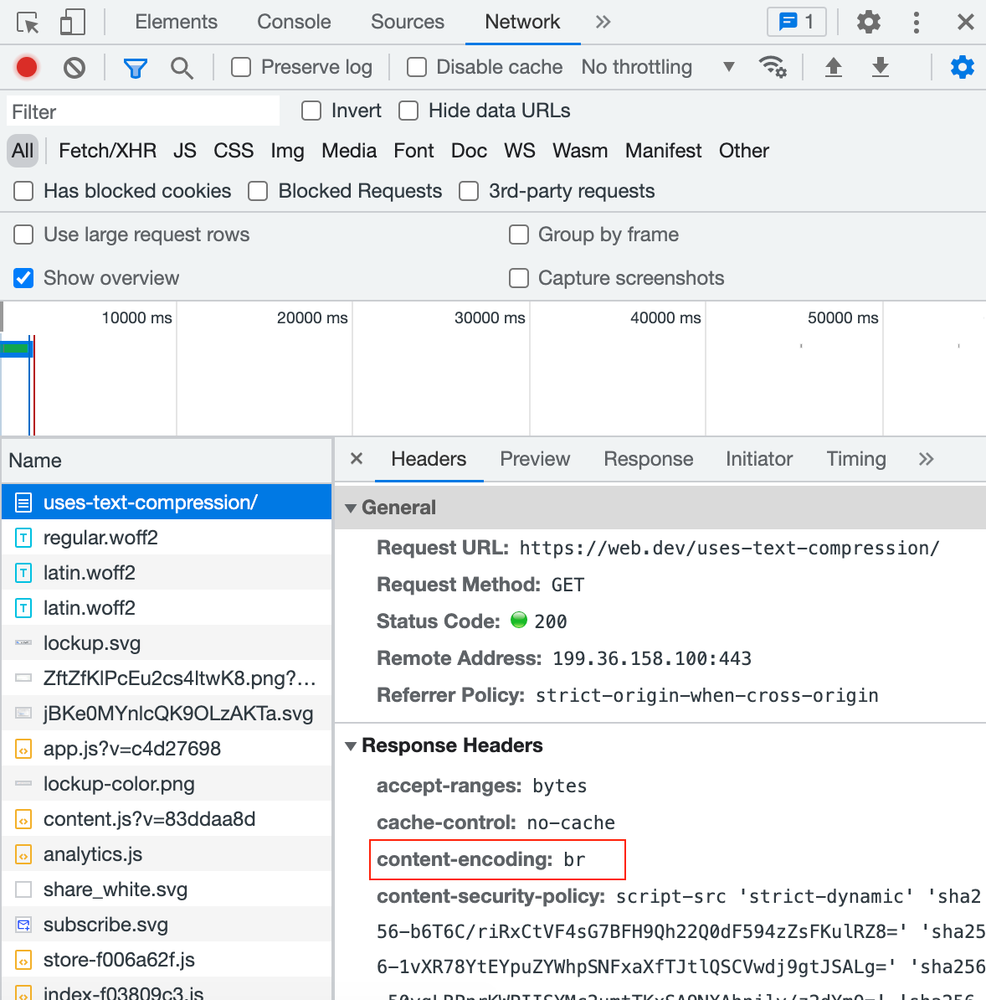
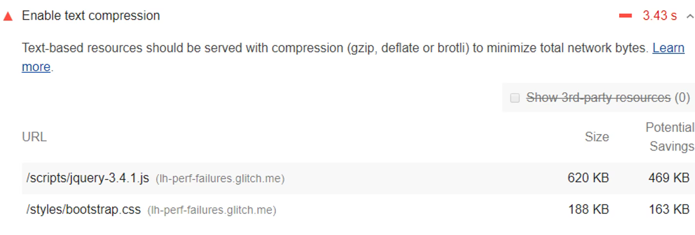
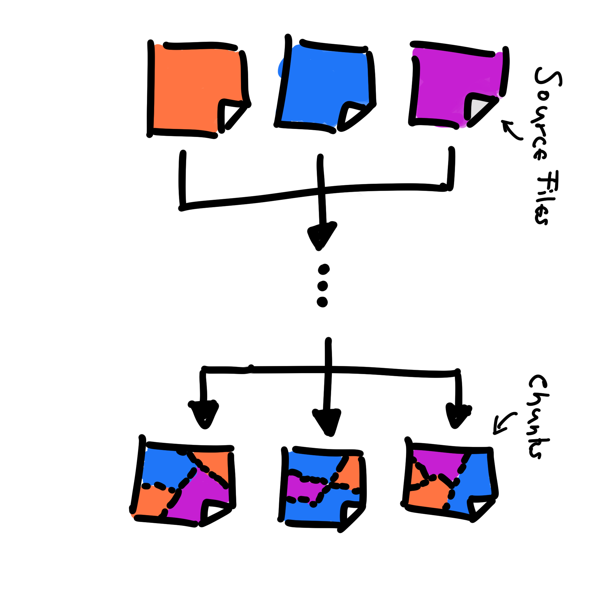
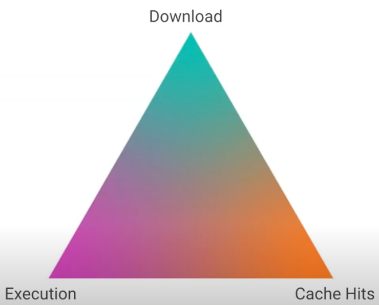
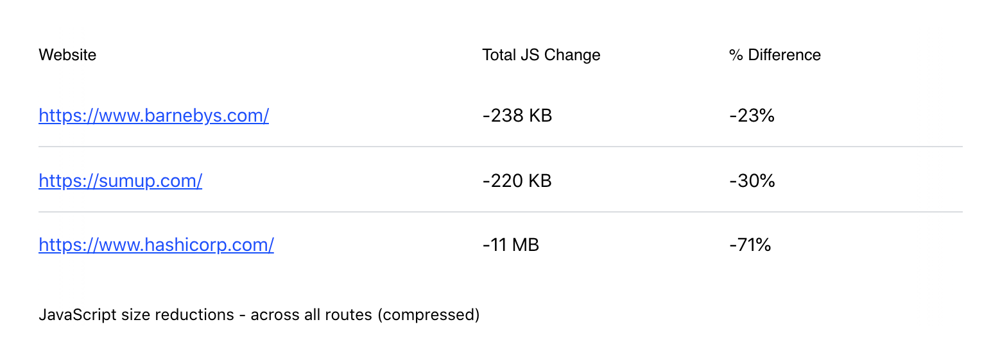

أنماط JavaScript
ضغط JavaScript (Compressing JavaScript)
اضغط JavaScript وراقب أحجام الأجزاء (chunks) للحصول على أفضل أداء. قد تساعد دقة الأجزاء العالية في حزمة JavaScript على إزالة التكرار والتخزين المؤقت، لكنها قد تعتمد ضغطًا أضعف وتؤثر في التحميل عندما يكون عدد الأجزاء بين 50 و100. اختر في النهاية استراتيجية الضغط الأنسب لك.
JavaScript هو ثاني أكبر مساهم في حجم الصفحة وثاني أكثر مورد ويب مطلوب على الإنترنت بعد الصور. نستخدم أنماطًا تقلل زمن نقل JavaScript وتحميله وتنفيذه لتحسين أداء المواقع. ويمكن أن يساعد الضغط في تقليل الزمن اللازم لنقل السكربتات عبر الشبكة.
يمكنك جمع الضغط مع تقنيات أخرى مثل التصغير وتقسيم الشيفرة (code splitting) والتجميع والتخزين المؤقت والتحميل الكسول لتقليل تأثير كميات JavaScript الكبيرة على الأداء. لكن أهداف هذه التقنيات قد تتعارض أحيانًا. يستعرض هذا القسم تقنيات ضغط JavaScript والفروق التي يجب مراعاتها عند اختيار استراتيجية للتقسيم والضغط.
- Gzip وBrotli هما أكثر طريقتين شيوعًا لضغط JavaScript، وتدعمهما المتصفحات الحديثة على نطاق واسع.
- يوفر Brotli نسبة ضغط أفضل عند مستويات ضغط متشابهة.
- يوفر Next.js ضغط Gzip افتراضيًا، لكنه يوصي بتمكينه على وكيل HTTP مثل Nginx.
- إذا استخدمت Webpack لتجميع الشيفرة، فيمكنك استخدام CompressionPlugin لضغط Gzip أو BrotliWebpackPlugin لضغط Brotli.
- لاحظ Oyo انخفاضًا بنسبة 15–20%، ولاحظت Wix انخفاضًا بنسبة 21–25% في أحجام الملفات بعد الانتقال إلى ضغط Brotli بدل Gzip.
- compress(a + b) <= compress(a) + compress(b) - تمنح الحزمة الكبيرة الواحدة ضغطًا أفضل من عدة حزم صغيرة. وهذا يسبب مقايضة الدقة، حيث تتعارض إزالة التكرار والتخزين المؤقت مع أداء المتصفح والضغط. ويمكن أن يساعد التقسيم الدقيق على التعامل مع هذه المقايضة.
ضغط HTTP
يقلل الضغط أحجام المستندات والملفات، فتستهلك مساحة قرص أقل ويمكن نقلها عبر الشبكة بسرعة. يستخدم ضغط HTTP هذا المفهوم البسيط لضغط محتوى المواقع، وتقليل أوزان الصفحات، وخفض متطلبات النطاق الترددي، وتحسين الأداء.
يمكن تصنيف ضغط بيانات HTTP بطرق مختلفة، ومن ذلك الضغط الفاقد للبيانات مقابل الضغط غير الفاقد لها.
الضغط الفاقد للبيانات يعني أن دورة الضغط وفك الضغط تنتج مستندًا مختلفًا قليلًا مع الاحتفاظ بصلاحيته. والتغيير لا يلاحظه المستخدم النهائي عادةً. وأشهر مثال هو ضغط JPEG للصور.
في الضغط غير الفاقد للبيانات، تطابق البيانات المستردة بعد الضغط وفك الضغط البيانات الأصلية تمامًا. وتُعد صور PNG مثالًا على ذلك. يناسب هذا النوع نقل النصوص، وينبغي تطبيقه على صيغ HTML وCSS وJavaScript.
لأنك تريد كل شيفرة JS صالحة في المتصفح، استخدم خوارزميات ضغط غير فاقد للبيانات لشيفرة JavaScript. وقبل ضغط JS، تساعد عملية التصغير على إزالة الصياغة غير الضرورية وتقليلها إلى الشيفرة المطلوبة للتنفيذ فقط.
التصغير
لتقليل أحجام الحمولة، يمكنك تصغير JavaScript قبل الضغط. والتصغير يكمّل الضغط بإزالة المسافات والشيفرة غير الضرورية لإنشاء ملف أصغر صالح. نستخدم أثناء الكتابة فواصل أسطر ومسافات بادئة وأسماء متغيرات ذات دلالة وتعليقات لتحسين القراءة والصيانة، لكنها لا تلزم المتصفح للتنفيذ. ويقلل التصغير الشيفرة إلى الحد الأدنى اللازم.
التصغير ممارسة معتادة لتحسين JS وCSS. غالبًا ما يقدم مطوّرو مكتبات JavaScript نسخًا مصغرة من ملفاتهم لنشرات الإنتاج، ويشار إليها عادةً بامتداد min.js. (مثل jquery.js وjquery.min.js)
تتوفر أدوات متعددة لتصغير موارد HTML وCSS وJS. وTerser أداة شائعة لضغط JavaScript لدعم ES6+، ويأتي Webpack v4 مع إضافتها افتراضيًا لإنشاء ملفات بناء مصغرة. ويمكن استخدام TerserWebpackPlugin مع الإصدارات الأقدم أو Terser كأداة CLI دون أداة تجميع.
الضغط الساكن مقابل الديناميكي
يساعد التصغير على تقليل أحجام الملفات بدرجة كبيرة، لكن ضغط JS قد يحقق مكاسب أكبر. يمكنك تنفيذ ضغط الخادم (server-side) بطريقتين.
الضغط الساكن: يمكنك ضغط الموارد مسبقًا وحفظها أثناء عملية البناء. ويمكنك استخدام مستويات ضغط أعلى لتحسين زمن تنزيل الشيفرة. لن يؤثر الوقت الطويل للبناء في أداء الموقع. الأفضل استخدام الضغط الساكن للملفات التي لا تتغير كثيرًا.
الضغط الديناميكي: يحدث الضغط أثناء طلب المتصفح للموارد. الضغط الديناميكي أسهل في التنفيذ، لكنه يحد من مستويات الضغط المتاحة. تتطلب المستويات الأعلى وقتًا أكثر، وقد تفقد ميزة الصغر الناتج. استخدمه مع المحتوى الذي يتغير كثيرًا أو الذي يولده التطبيق.
يمكنك استخدام الضغط الساكن أو الديناميكي حسب نوع محتوى التطبيق. ويمكنك تمكين النوعين بخوارزميات شائعة، لكن مستويات الضغط الموصى بها تختلف في كل حالة. فلننظر إلى خوارزميات الضغط لفهم ذلك.
خوارزميات الضغط
Gzip وBrotli هما الخوارزميتان الأكثر شيوعًا المستخدمتان في ضغط بيانات HTTP اليوم.
Gzip
موجود تنسيق ضغط Gzip منذ نحو 30 عامًا، وهو خوارزمية غير فاقد للبيانات تعتمد على خوارزمية Deflate. تستخدم Deflate مزيجًا من خوارزمية LZ77 وترميز Huffman على كتل البيانات في تدفق الإدخال.
تحدد خوارزمية LZ77 السلاسل المكررة وتستبدلها بإشارة مرجعية، وهي مؤشر إلى الموضع الذي ظهرت فيه من قبل، يتبعه طول السلسلة. ثم يحدد ترميز Huffman المراجع الشائعة ويستبدلها بمراجع ذات تسلسلات بت أقصر. وتستخدم التسلسلات الأطول للمراجع النادرة.

مصدر الصورة: https://www.youtube.com/watch?v=whGwm0Lky2s&t=851s
تدعم جميع المتصفحات الرئيسية Gzip. وZopfli خوارزمية أبطأ لكن محسنة من Deflate/Gzip، تنتج ملفات GZip متوافقة أصغر. وهي مناسبة للضغط الساكن، حيث توفر مكاسب أكبر.
Brotli
في عام 2015، قدست Google خوارزمية Brotli وصيغة بيانات Brotli المضغوطة. تعد Brotli خوارزمية غير فاقد للبيانات تعتمد على LZ77 وترميز Huffman، وتستخدم نمذجة سياق من الرتبة الثانية لضغط أكثف عند سرعات مشابهة. كما تدعم Brotli نافذة أكبر للمراجع الخلفية، ولديها قاموس ثابت.
تدعم جميع الخوادم والمتصفحات الرئيسية Brotli اليوم، وأصبحت شائعة بشكل متزايد. كما مدعومة من مزودات الاستضافة والبرمجيات الوسيطة مثل Netlify وAWS وVercel.
حسّنت المواقع ذات قاعدة المستخدمين الكبيرة، مثل OYO وWix، أدائها كثيرًا بعد استبدال Gzip بـ Brotli.
مقارنة Gzip وBrotli
يعرض الجدول التالي مقارنة معيارية لنسب وسرعات ضغط Brotli وGzip عند مستويات مختلفة.

إليك بعض النتائج من بحث Chrome حول ضغط JS باستخدام Gzip وBrotli.
- يحقق Gzip 9 أفضل نسبة ضغط مع سرعة جيدة، وينبغي التفكير في استخدامه قبل مستويات Gzip الأخرى.
- مع Brotli، استخدم المستويات 6–11. وفي غير ذلك،يمكن تحقيق نسبة مماثلة بسرعة أكبر باستخدام Gzip.
- عبر جميع أحجام المحتوى، يكون Brotli 9–11 أفضل بكثير من Gzip، لكنه بطيء.
- كلما كانت الحزمة أكبر، تحسنت نسبة الضغط والسرعة.
- العلاقة بين الخوارزميات متشابهة لكل أحجام الحزم، على سبيل المثال Brotli 7 أفضل من Gzip 9 لكل حجم، وGzip 9 أسرع من Brotli 5 لكل النطاقات.
لننظر الآن إلى طريقة تواصل الخوادم والمتصفحات حول تنسيق الضغط المختار.
تمكين الضغط
يمكنك تمكين الضغط الساكن أثناء البناء. إذا استخدمت Webpack لتجميع الشيفرة، فيمكنك استخدام CompressionPlugin لضغط Gzip أو BrotliWebpackPlugin لضغط Brotli. ويمكن إضافة الإضافة إلى ملف إعداد Webpack كما يلي.
module.exports = {
//...
plugins: [
//...
new CompressionPlugin(),
],
};
يوفر Next.js ضغط Gzip افتراضيًا، لكنه يوصي بتمكينه على وكيل HTTP مثل Nginx. ويدعم كل من Gzip وBrotli على منصة Vercel عند مستوى الوكيل.
يمكنك تمكين ضغط ديناميكي غير فاقد للبيانات على الخوادم التي تدعم خوارزميات مختلفة، بما فيها Node.js. ويخبر المتصفح الخادم الخوارزميات التي يدعمها عبر رأس HTTP Accept-Encoding في الطلب. على سبيل المثال، Accept-Encoding: gzip, br.
يوضح هذا أن المتصفح يدعم Gzip وBrotli. يمكنك تمكين أنواع الضغط على خادمك باتباع تعليمات نوع الخادم. على سبيل المثال، تجد تعليمات تمكين Brotli على خادم Apache هنا. وExpress إطار ويب شائع لـ Node ويقدم مكتبة برمجيات وسيطة compression. استخدمها لضغط أي أصل عند طلبه.
يُنصح بـ Brotli بدل خوارزميات الضغط الأخرى لأنه ينتج ملفات أصغر. يمكنك تمكين Gzip كبديل للمتصفحات التي لا تدعم Brotli. وإذا أعدت التهيئة بنجاح، سيعيد الخادم رأس استجابة HTTP Content-Encoding للإشارة إلى الخوارزمية المستخدمة، مثل Content-Encoding: br.
تدقيق الضغط
يمكنك التحقق مما إذا كان الخادم ضغط السكربتات أو النصوص التي نزلتها في Chrome -> DevTools -> network -> Headers. وتعرض DevTools ترميز المحتوى المستخدم في الاستجابة كما هو موضح أدناه.

يتضمن تقرير Lighthouse تدقيق أداء لـ «Enable Text Compression» يبحث عن موارد نصية وصلت دون رأس content-encoding المضبوط على br أو gzip أو deflate. ويستخدم Lighthouse Gzip لحساب الوفر الممكن.

مصدر الصورة: https://web.dev/uses-text-compression/#how-to-enable-text-compression-on-your-server
ضغط JavaScript ودقة التحميل
لفهم تأثيرات ضغط JavaScript تمامًا، عليك أيضًا النظر في جوانب أخرى لتحسين JavaScript، مثل التقسيم حسب المسار وتقسيم الشيفرة والتجميع.
غالبًا ما تستخدم تطبيقات الويب الحديثة التي تحتوي على كميات كبيرة من شيفرة JavaScript تقنيات لتقسيم الشيفرة وتجميعها وتحميلها بكفاءة. تستخدم التطبيقات حدودًا منطقية لتقسيم الشيفرة، مثل التقسيم حسب المسار في تطبيقات الصفحة الواحدة أو تقديم JavaScript تدريجيًا عند التفاعل أو الظهور في إطار العرض. ويمكنك إعداد أدوات التجميع للتعرف على هذه الحدود.
لنغطي بعض التعريفات الأساسية المتعلقة لتقسيم الشيفرة والتجميع قبل بيان كيفية تأثير ذلك في الضغط.
مصطلحات التجميع
فيما يلي بعض المصطلحات المهمة المتعلقة بنقاشنا.
- الوحدة (Module): وحدات مستقلة من الوظائف مصممة لتوفير تجريدات قوية وعزل. راجع نمط الوحدة لمزيد من التفاصيل.
- الحزمة (Bundle): مجموعة وحدات مختلفة تحتوي على الإصدارات النهائية لملفات المصدر، وقد مرّت بعملية التحميل والترجمة في أداة التجميع.
- تقسيم الحزمة (Bundle splitting): العملية التي تستخدمها أدوات التجميع لتقسيم التطبيق إلى حزم متعددة، بحيث يمكن عزل كل حزمة أو نشرها أو تنزيلها أو تخزينها بشكل مستقل.
- الجزء (Chunk): مصطلح مستعار من Webpack، ويشير إلى الناتج النهائي لعملية التجميع وتقسيم الشيفرة. ويمكن لـ Webpack تقسيم الحزم إلى أجزاء وفق إعداد entry أو SplitChunksPlugin أو الاستيرادات الديناميكية.
إذا كانت الوحدات موجودة في ملفات المصدر، فإن الناتج النهائي لعملية البناء بعد تقسيم الشيفرة أو الحزمة يسمى جزءًا (chunk). ولاحظ أن ملفات المصدر والأجزاء قد يعتمد كل منهما على الآخر.

مصدر الصورة: https://www.youtube.com/watch?v=ImjzA7EMI6I&list=PLyspMSh4XhLP-mqulUMcaqTbLo-ZJxSX5&index=29
يشير حجم JavaScript الناتج إلى حجم الأجزاء أو الحجم الخام بعد تحسينه بواسطة أداة تجميع أو مترجم JavaScript. ويمكن تفكيك تطبيقات JS الكبيرة إلى أجزاء من ملفات JavaScript قابلة للتحميل بشكل مستقل. ودقة التحميل (loading granularity) تعني عدد أجزاء الناتج؛ فكلما زاد العدد، صغر حجم كل جزء وزادت الدقة.
بعض الأجزاء أكثر أهمية من غيرها لأنها تحمّل أكثر أو تنتمي إلى مسارات شيفرة أكثر تأثيرًا، مثل تحميل أداة «checkout». ومعرفة الأجزاء الأكثر أهمية تتطلب معرفة التطبيق، لكن من الآمن افتراض أن جزء «base» أساسي دائمًا.
كل بايت في الأجزاء التي تحتاجها الصفحة يجب أن تنزّله أجهزة المستخدم ثم تحلله أو تنفذه. وهذه هي الشيفرة التي تؤثر مباشرة في أداء التطبيق. ولأن الأجزاء هي الشيفرة التي ستنزّل في النهاية، يمكن أن يؤدي ضغطها إلى سرعات تنزيل أفضل.
بهذه الخلفية، لنناقش التفاعل بين دقة التحميل والضغط.
مقايضة الدقة
في العالم المثالي، يجب أن تحقق استراتيجية الدقة والتقسيم الأهداف التالية، وهي أهداف متعارضة فيما بينها.
- تحسين سرعة التنزيل: يمكن تحسين سرعة التنزيل بالضغط، لكن ضغط جزء كبير واحد يعطي نتيجة أفضل أو ملفًا أصغر من ضغط أجزاء صغيرة تحتوي على الشيفرة نفسها.
compress(a + b) <= compress(a) + compress(b)
تشير البيانات المحلية المحدودة إلى فقدان بنسبة 5% إلى 10% للأجزاء الأصغر. وتظهر حالة الأجزاء غير المجمعة زيادة بنسبة 20% في الحجم. وتُضاف تكاليف IPC وI/O والمعالجة إلى كل جزء مشترك في حالة الأجزاء الأكبر. ولدى محرك v8 عتبة بث/تحليل قدرها 30K، ما يعني أن كل جزء أصغر من 30K سيُحلل في مسار التحميل الحرج حتى لو لم يكن حرجًا.
للأسباب المذكورة أعلاه، قد تكون الأجزاء الأكبر أكفأ من الأصغر للشيفرة نفسها عند تحسين التنزيل وأداء المتصفح.
-
تحسين مرات إصابة الذاكرة المؤقتة وكفاءتها: تحقق الأجزاء الصغيرة كفاءة أفضل، خصوصًا في التطبيقات التي تحمّل JS تدريجيًا.
-
التغييرات مع الأجزاء الأصغر تكون معزولة في أجزاء أقل. وإذا حدث تغيير، يلزم تنزيل الأجزاء المتأثرة فقط، وحجم الشيفرة المقابل لها صغير غالبًا. ويمكن العثور على بقية الأجزاء في الذاكرة المؤقتة، مما يزيد مرات الإصابة.
-
مع الأجزاء الأكبر، من المرجح أن تتغير كمية كبيرة من الشيفرة وتلزم إعادة تنزيلها. لذلك تفيد الأجزاء الأصغر في استخدام آلية الذاكرة المؤقتة.
-
تنفيذ سريع - لتنفيذ الشيفرة بسرعة يجب تحقق الشروط التالية.
-
تكون جميع الاعتماديات المطلوبة متاحة فورًا، فقد نُزّلت معًا أو موجودة في الذاكرة المؤقتة. وهذا يعني تجميع الشيفرة المرتبطة في جزء أكبر.
-
لا ينبغي تنفيذ سوى الشيفرة التي تحتاجها الصفحة أو المسار. وهذا يتطلب عدم تنزيل أو تنفيذ شيفرة إضافية. قد تحتوي جزء
commonsعلى اعتماديات تحتاجها معظم الصفحات لا كلها، إزالة التكرار تتطلب أجزاء مستقلة أصغر. -
يمكن للمهام الطويلة على الخيط الرئيسي أن تحجبه وقتًا طويلًا، لذلك يجب تقسيمها إلى أجزاء أصغر.

مصدر الصورة: https://www.youtube.com/watch?v=ImjzA7EMI6I&list=PLyspMSh4XhLP-mqulUMcaqTbLo-ZJxSX5&index=29
كما يوضح المثلث أعلاه، فإن دقة التحميل التي تحاول تحسين أحد هذه الأهداف قد تبتعد عن الأهداف الأخرى. هذه هي مشكلة مقايضة الدقة.
إزالة التكرار والتخزين المؤقت يتعارضان مع أداء المتصفح والضغط.
نتيجة لهذه المقايضة، يستخدم معظم تطبيقات الإنتاج اليوم نحو 10 أجزاء كحد أقصى. ينبغي رفع هذا الحد لدعم أفضل للتخزين المؤقت وإزالة التكرار في التطبيقات التي تحتوي على كميات كبيرة من JavaScript.
SplitChunksPlugin والتقسيم الدقيق
يمكن أن يعالج الحل المحتمل لمقايضة الدقة المتطلبات التالية:
- السماح بعدد أكبر من الأجزاء، من 40 إلى 100، بأحجام أصغر لتحسين الذاكرة المؤقتة وإزالة التكرار دون التأثير في الأداء.
- معالجة تكاليف الأداء التي تسببها الأجزاء الصغيرة المتعددة بسبب IPC وI/O والمعالجة ووسوم السكربتات الكثيرة.
- معالجة فقد الضغط عند استخدام أجزاء صغيرة متعددة.
لا يزال الحل المحتمل الذي يعالج هذه المتطلبات قيد العمل. لكن SplitChunksPlugin في Webpack v4 واستراتيجية التقسيم الدقيق يمكنهما مساعدة رفع دقة التحميل إلى حد ما.
استخدم Webpack القديم CommonsChunkPlugin لتجميع الاعتماديات المشتركة في جزء واحد. وقد قدم Webpack SplitChunksPlugin في الإصدار v4 لتحسين الصفحات التي لا تستخدم هذه الوحدات، ومنع جلب الشيفرة المكررة عبر المسارات.
اعتمد Next.js SplitChunksPlugin ونفذ استراتيجية التقسيم الدقيق (Granular Chunking) لإنشاء أجزاء Webpack تعالج مقايضة الدقة.
- يُقسَّم أي وحدة طرف ثالث كبيرة بما يكفي، أكبر من 160KB، إلى جزء مستقل.
- يُنشأ جزء منفصل لعناصر إطار العمل، مثل react وreact-dom.
- يُنشأ عدد من الأجزاء المشتركة حسب الحاجة، حتى 25.
- يُغيَّر الحد الأدنى لحجم الجزء الذي يُنشأ إلى 20KB.
يُنشئ إصدار عدة أجزاء مشتركة بدل جزء واحد أقل شيفرة غير ضرورية أو مكررة تُنزّل أو تُنفذ في الصفحات المختلفة. كما تحسن الأجزاء المستقلة للمكتبات الكبيرة لدى الأطراف الخارجية التخزين المؤقت لأنها نادرًا ما تتغير. ويضمن حد أدنى قدره 20KB ألّا يكون فقد الضغط كبيرًا.
ساعدت استراتيجية التقسيم الدقيق عدة تطبيقات Next.js على تقليل إجمالي JavaScript المستخدم في الموقع.

طُبقت استراتيجية التقسيم الدقيق أيضًا في Gatsby ولوحظت فوائد مماثلة.
الخاتمة
لا يمكن للضغط وحده حل مشكلات أداء JavaScript كلها، لكن فهم طريقة عمل المتصفحات وأدوات التجميع في الخلفية يساعد على إنشاء استراتيجية تجميع أفضل تدعم ضغطًا أفضل. ويجب معالجة مشكلة دقة التحميل عبر منصات مختلفة في النظام البيئي. قد يكون التقسيم الدقيق خطوة في هذا الاتجاه، لكننا ما زلنا بعيدين عن الحل.